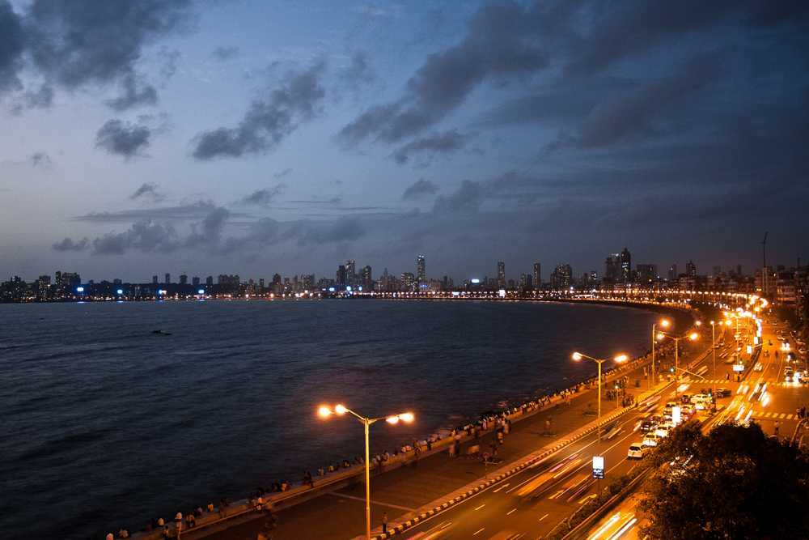
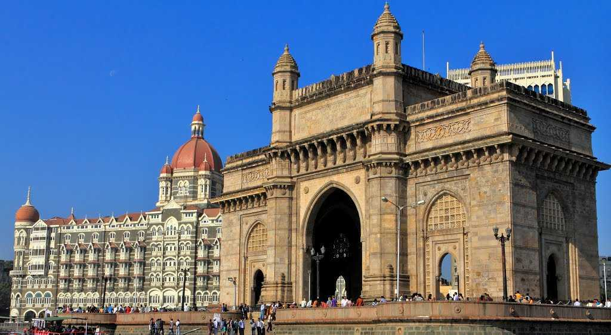
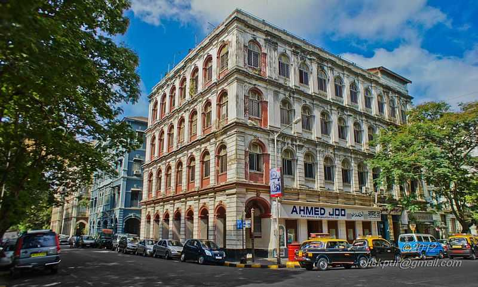
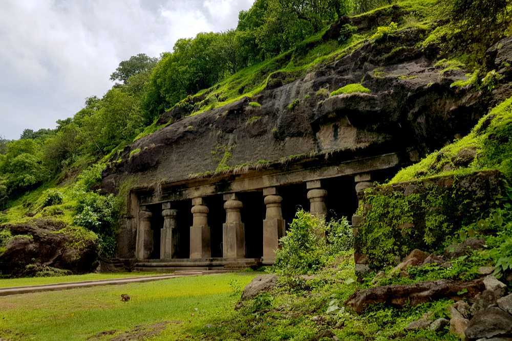

Mumbai
Mumbai, the capital city of the Indian state of Maharashtra, is a spectacular paradox of chaos and hope, glamour and squalor, modernity and tradition. Famously known as the City of Dreams, Mumbai – formerly known as Bombay - Mumbai is a beautifully blended melting pot of cultures and lifestyles. The city soaks in everything into its fabric, making it its very own. From upcoming actors struggling to make it big on the silver screen; from Bolly superstars to big industrialists to tribes of fisherman and slum dwellers, Mumbai is a city that proudly boasts of stories from different walks of human survival. One of the main centres in the country of art, culture, music, dance and theatre, Mumbai is a dynamic, cosmopolitan city that has been running for years solely on the indomitable spirit of the Mumbaikars.
Mumbai is the financial, commercial, and the entertainment capital of India. It is also one of the world's top ten centres of commerce in terms of global financial flow, generating 6.16% of India's GDP, and accounting for 25% of industrial output, 70% of maritime trade in India (Mumbai Port Trust and JNPT), and 70% of capital transactions to India's economy. Mumbai has the eighth-highest number of billionaires of any city in the world, and Mumbai's billionaires had the highest average wealth of any city in the world in 2008. The city houses important financial institutions and the corporate headquarters of numerous Indian companies and multinational corporations. It is also home to some of India's premier scientific and nuclear institutes. Mumbai's business opportunities attract migrants from all over India.
Some of the important tourist attractions in Mumbai are:
Marine Drive
Marine Drive is the most easily identifiable landmark associated with Mumbai and is indicative of the glamor and glitter of the city. It is essentially 3.6 km long, arc-shaped boulevard along the South Mumbai coast that starts at the southern end of Nariman Point and ends at Girgaum Chowpatty, popularly known as Chowpatty Beach. The coast wraps the Arabian sea and is the best place in Mumbai to watch the sunset or even to just take a leisurely stroll by the sea any time of the day or night. At night, when the whole coastline lights up, it justifies its other moniker i.e. Queen's Necklace.
The whole curve of the coastline, shielded with palm trees makes for a spectacular view at night - you can go to either end of Marine Drive after sunset and see the lights glowing in a perfect arc all along the coast. People come to walk here in the evening to experience the brilliant sunset. It is also one of the places people visit late at night, and you will find vendors selling chai and cigarettes at all hours. The sound of the waves, a view of the Mumbai skyline and the starry sky easily make Marine Drive one of the most romantic spots in the city.
Gateway of India
The Gateway of India is, without doubt, one of the most popular tourist hotspots of Mumbai. Sitting proudly on the Apollo Bunder, it overlooks the Arabian Sea. It is one of the defining monuments of the city of Mumbai and was built in the year 1924. The construction was undertaken by the famous architect George Wittet, to commemorate the visit of King George V and Queen Mary to Mumbai. The imposing structure of the monument is a beautiful confluence of Indian, Arabic and Western architecture and has become a popular tourist hub in the city. It is also the starting point of a number of ferry services that ply to the historic Elephanta Caves.
Nicknamed 'Mumbai's Taj Mahal', the foundation of this landmark was laid in 1911 and it was inaugurated 13 years later in 1924. The structure in itself is a made of yellow basalt and solid concrete and is embellished with numerous Muslim and Hindu motifs as well. The basalt arch of the Gateway served as the entry and exit access to India through waterways before independence and was the exit point from where the last British ship left India for England. There are statues of Swami Vivekananda and Chhatrapati Shivaji that have been installed near the Gateway as well. The view from the sea of the Gateway complex, especially at night is quite ethereal and beautiful. The Gateway of India is thus, not only a historic artefact but an example of marvellous architecture in itself!
Colaba Causeway
One of the most exciting and eclectic places to visit in Mumbai is the Colaba Causeway, famous for being a shopper's paradise. Iconic at best, ask any Mumbaikar and they will tell you that the Causeway is pretty much the heart of Mumbai. Resurgent, even after the terror attack, this shopping street stood up on its feet in no time. Apart from gorgeous clothes and accessories, especially earrings, you can also find great bargains on home decor stuff such as lampshades, curios and antiques. If designer stuff is your calling, there are a number of options for that as well. If you do feel like catching a bite and a beer, there are a number of restaurants that offer great food and booze at very affordable prices and Cafe Leopold and Cafe Mondegar are pretty much the best!
Colaba Causeway acts as the land link between Colaba and the Old Woman's Island. It lies close to the Fort area which is a business sector and the heart of the city since the British era. From roadside vendors to glamorous boutiques, the street sells everything you can think of buying – in different quality and prices. Catch the old world movies charm at Regal Cinema. Behind Regal Cinema, the Causeway leads you to the Gateway of India overlooking the Arabian Sea. Here, the majestic Taj Mahal Palace Hotel dominates the city's skyline. Colaba Causeway is the heart of Mumbai and it's the liveliest you will ever see the city!
Elephanta Caves
A UNESCO World Heritage Site, Elephanta Caves is a specimen of rock-cut art and architecture from the times of medieval India. The caves are located on the Elephanta or Gharapuri island which is situated at a distance of 11 km from the city of Mumbai. Natively known as Gharapurichi Leni, the Elephanta Caves that exist today are ruins of what were once elaborately painted artworks. It also provides an amazing view of the Mumbai skyline. You can reach the Elephanta Caves via a ferry ride from Gateway of India. This collection of cave temples dates back to 5th to 7th centuries and most of them are dedicated to Lord Shiva.
There are two groups of alcoves in the site of the Elephanta Caves, the first is a large group of five Hindu caves and the second one is a smaller group of two Buddhist caves. The Hindu caves contain the stone sculptures representing the Shaiva Hindu sect. The caves are an expression of art and a number of important imageries are sculpted here, which include 'Trimurti' or three-headed Shiva, 'Gangadhar' which is a manifestation of the river Ganga as she descends to the earth and 'Ardhnareshwar', which is a representation of Shiva and Parvati in the same body. In addition to being an important heritage site, the Elephanta Caves are also an unlikely trekking destination.
Juhu Beach

Juhu beach is the longest beach in Mumbai and the most popular among tourists as well. It is renowned for its wide variety of street food that has a typical Mumbai flavour and is sweet and sour. The surrounding area of Juhu is one of the poshest localities in Mumbai and is home to a lot of famous Bollywood and TV celebrities - the most famous being Amitabh Bachchan's bungalow - and it is not rare to spot a celebrity jogging on the beach.
Television shoots are often held and a number of toy-sellers, roasted corn vendors and acrobats attract the eye. While here, you may also visit the iconic ISKCON Temple which is meters away from the beach or watch a theatre performance at the famous Prithvi Cafe. Just taking walk across the beach sand can bring an infinite sense of calm. Although the beach was criticized for being unclean, efforts by BMC have significantly improved the scenery in the past few years.